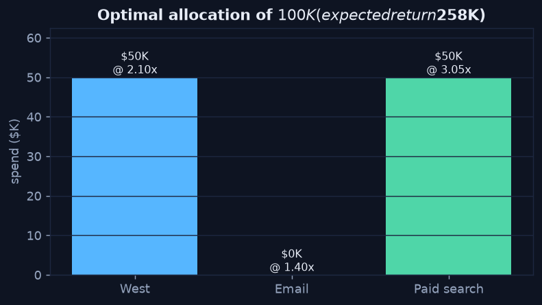

Optimization — Allocate for the Best Outcome
Chapter 3 — Let a Solver Find the Optimum
When you must split a limited resource across competing options, that's an optimization
problem. Instead of guessing, you state three things and let a solver search every feasible plan for the best
one. Linear programming is the classic workhorse, and scipy.optimize.linprog solves it in a few
lines.
The Three Ingredients
- Objective — maximize total expected return.
- Decision variables — dollars to each channel (West, Email, Paid search).
- Constraints — the budget and the per-channel ranges from the previous chapter.
Python · scipy.optimize
from scipy.optimize import linprog
returns = [2.10, 1.40, 3.05] # West, Email, Paid search
c = [-r for r in returns] # linprog minimizes -> negate to maximize
result = linprog(
c,
A_ub=[[1, 1, 1]], b_ub=[100_000], # total spend <= budget
bounds=[(10_000, 60_000), # West
(0, 40_000), # Email
(5_000, 50_000)], # Paid search
method="highs")
print(result.x) # [50000, 0, 50000]
print(-result.fun) # 257500
The optimum: max out Paid search (highest return), fill the rest into West, skip Email entirely — an expected $257.5K return on the $100K budget.
Reading the Result
The solver pours money into the highest-return channel (Paid search) up to its $50K ceiling, sends the remaining $50K to the next-best (West), and gives Email nothing — its 1.40× return doesn't earn a place once the better channels can absorb the budget. The result respects every constraint and beats both intuitive scenarios from Chapter 1 by roughly $40K.
For a pure linear problem like this, sorting channels by return-per-dollar happens to reach the same answer — but the moment constraints interact (shared inventory, minimum-spend bundles, integer "all-or-nothing" choices), hand-sorting breaks and the solver keeps working. That is why you express the decision to an optimizer rather than solving it by hand.